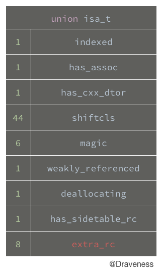

黑箱中的 retain 和 release
由于 Objective-C 中的内存管理是一个比较大的话题，所以会分为两篇文章来对内存管理中的一些机制进行剖析，一部分分析自动释放池以及
autorelease方法，另一部分分析retain、release方法的实现以及自动引用计数。
写在前面
在接口设计时，我们经常要考虑某些意义上的平衡。在内存管理中也是这样，Objective-C 同时为我们提供了增加引用计数的 retain 和减少引用计数的 release 方法。
这篇文章会在源代码层面介绍 Objective-C 中 retain 和 release 的实现，它们是如何达到平衡的。
从 retain 开始
如今我们已经进入了全面使用 ARC 的时代，几年前还经常使用的 retain 和 release 方法已经很难出现于我们的视野中了，绝大多数内存管理的实现细节都由编译器代劳。
在这里，我们还要从 retain 方法开始，对内存管理的实现细节一探究竟。
下面是 retain 方法的调用栈：
- [NSObject retain]
└── id objc_object::rootRetain()
└── id objc_object::rootRetain(bool tryRetain, bool handleOverflow)
├── uintptr_t LoadExclusive(uintptr_t *src)
├── uintptr_t addc(uintptr_t lhs, uintptr_t rhs, uintptr_t carryin, uintptr_t *carryout)
├── uintptr_t bits
│ └── uintptr_t has_sidetable_rc
├── bool StoreExclusive(uintptr_t *dst, uintptr_t oldvalue, uintptr_t value)
└── bool objc_object::sidetable_addExtraRC_nolock(size_t delta_rc)
└── uintptr_t addc(uintptr_t lhs, uintptr_t rhs, uintptr_t carryin, uintptr_t *carryout)
调用栈中的前两个方法的实现直接调用了下一个方法：
- (id)retain {
return ((id)self)->rootRetain();
}
id objc_object::rootRetain() {
return rootRetain(false, false);
}
而 id objc_object::rootRetain(bool tryRetain, bool handleOverflow) 方法是调用栈中最重要的方法，其原理就是将 isa 结构体中的 extra_rc 的值加一。
extra_rc 就是用于保存自动引用计数的标志位，下面就是 isa 结构体中的结构：

接下来我们会分三种情况对 rootRetain 进行分析。
正常的 rootRetain
这是简化后的 rootRetain 方法的实现，其中只有处理一般情况的代码：
id objc_object::rootRetain(bool tryRetain, bool handleOverflow) {
isa_t oldisa;
isa_t newisa;
do {
oldisa = LoadExclusive(&isa.bits);
newisa = oldisa;
uintptr_t carry;
newisa.bits = addc(newisa.bits, RC_ONE, 0, &carry);
} while (!StoreExclusive(&isa.bits, oldisa.bits, newisa.bits));
return (id)this;
}
在这里我们假设的条件是
isa中的extra_rc的位数足以存储retainCount。
- 使用
LoadExclusive加载isa的值 - 调用
addc(newisa.bits, RC_ONE, 0, &carry)方法将isa的值加一 - 调用
StoreExclusive(&isa.bits, oldisa.bits, newisa.bits)更新isa的值 - 返回当前对象
有进位版本的 rootRetain
在这里调用 addc 方法为 extra_rc 加一时，8 位的 extra_rc 可能不足以保存引用计数。
id objc_object::rootRetain(bool tryRetain, bool handleOverflow) {
transcribeToSideTable = false;
isa_t oldisa = LoadExclusive(&isa.bits);
isa_t newisa = oldisa;
uintptr_t carry;
newisa.bits = addc(newisa.bits, RC_ONE, 0, &carry);
if (carry && !handleOverflow)
return rootRetain_overflow(tryRetain);
}
extra_rc不足以保存引用计数，并且handleOverflow = false。
当方法传入的 handleOverflow = false 时（这也是通常情况），我们会调用 rootRetain_overflow 方法：
id objc_object::rootRetain_overflow(bool tryRetain) {
return rootRetain(tryRetain, true);
}
这个方法其实就是重新执行 rootRetain 方法，并传入 handleOverflow = true。
有进位版本的 rootRetain（处理溢出）
当传入的 handleOverflow = true 时，我们就会在 rootRetain 方法中处理引用计数的溢出。
id objc_object::rootRetain(bool tryRetain, bool handleOverflow) {
bool sideTableLocked = false;
isa_t oldisa;
isa_t newisa;
do {
oldisa = LoadExclusive(&isa.bits);
newisa = oldisa;
uintptr_t carry;
newisa.bits = addc(newisa.bits, RC_ONE, 0, &carry);
if (carry) {
newisa.extra_rc = RC_HALF;
newisa.has_sidetable_rc = true;
}
} while (!StoreExclusive(&isa.bits, oldisa.bits, newisa.bits));
sidetable_addExtraRC_nolock(RC_HALF);
return (id)this;
}
当调用这个方法，并且 handleOverflow = true 时，我们就可以确定 carry 一定是存在的了，
因为 extra_rc 已经溢出了，所以要更新它的值为 RC_HALF：
#define RC_HALF (1ULL<<7)
extra_rc总共为 8 位，RC_HALF = 0b10000000。
然后设置 has_sidetable_rc 为真，存储新的 isa 的值之后，调用 sidetable_addExtraRC_nolock 方法。
bool objc_object::sidetable_addExtraRC_nolock(size_t delta_rc) {
SideTable& table = SideTables()[this];
size_t& refcntStorage = table.refcnts[this];
size_t oldRefcnt = refcntStorage;
if (oldRefcnt & SIDE_TABLE_RC_PINNED) return true;
uintptr_t carry;
size_t newRefcnt =
addc(oldRefcnt, delta_rc << SIDE_TABLE_RC_SHIFT, 0, &carry);
if (carry) {
refcntStorage = SIDE_TABLE_RC_PINNED | (oldRefcnt & SIDE_TABLE_FLAG_MASK);
return true;
} else {
refcntStorage = newRefcnt;
return false;
}
}
这里我们将溢出的一位 RC_HALF 添加到 oldRefcnt 中，其中的各种 SIDE_TABLE 宏定义如下：
#define SIDE_TABLE_WEAKLY_REFERENCED (1UL<<0)
#define SIDE_TABLE_DEALLOCATING (1UL<<1)
#define SIDE_TABLE_RC_ONE (1UL<<2)
#define SIDE_TABLE_RC_PINNED (1UL<<(WORD_BITS-1))
#define SIDE_TABLE_RC_SHIFT 2
#define SIDE_TABLE_FLAG_MASK (SIDE_TABLE_RC_ONE-1)
因为 refcnts 中的 64 为的最低两位是有意义的标志位，所以在使用 addc 时要将 delta_rc 左移两位，获得一个新的引用计数 newRefcnt。
如果这时出现了溢出，那么就会撤销这次的行为。否则，会将新的引用计数存储到 refcntStorage 指针中。
也就是说，在 iOS 的内存管理中，我们使用了 isa 结构体中的 extra_rc 和 SideTable 来存储某个对象的自动引用计数。
更重要的是，如果自动引用计数为 1，extra_rc 实际上为 0，因为它保存的是额外的引用计数，我们通过这个行为能够减少很多不必要的函数调用。
到目前为止，我们已经从头梳理了 retain 方法的调用栈及其实现。下面要介绍的是在内存管理中，我们是如何使用 release 方法平衡这个方法的。
以 release 结束
与 release 方法相似，我们看一下这个方法简化后的调用栈：
- [NSObject release]
└── id objc_object::rootRelease()
└── id objc_object::rootRetain(bool performDealloc, bool handleUnderflow)
前面的两个方法的实现和 retain 中的相差无几，这里就直接跳过了。
同样，在分析 release 方法时，我们也根据上下文的不同，将 release 方法的实现拆分为三部分，说明它到底是如何调用的。
正常的 release
这一个版本的方法调用可以说是最简版本的方法调用了：
bool objc_object::rootRelease(bool performDealloc, bool handleUnderflow) {
isa_t oldisa;
isa_t newisa;
do {
oldisa = LoadExclusive(&isa.bits);
newisa = oldisa;
uintptr_t carry;
newisa.bits = subc(newisa.bits, RC_ONE, 0, &carry);
} while (!StoreReleaseExclusive(&isa.bits, oldisa.bits, newisa.bits));
return false;
}
- 使用
LoadExclusive获取isa内容 - 将
isa中的引用计数减一 - 调用
StoreReleaseExclusive方法保存新的isa
从 SideTable 借位
接下来，我们就要看两种相对比较复杂的情况了，首先是从 SideTable 借位的版本：
bool objc_object::rootRelease(bool performDealloc, bool handleUnderflow) {
isa_t oldisa;
isa_t newisa;
do {
oldisa = LoadExclusive(&isa.bits);
newisa = oldisa;
uintptr_t carry;
newisa.bits = subc(newisa.bits, RC_ONE, 0, &carry);
if (carry) goto underflow;
} while (!StoreReleaseExclusive(&isa.bits, oldisa.bits, newisa.bits));
...
underflow:
newisa = oldisa;
if (newisa.has_sidetable_rc) {
if (!handleUnderflow) {
return rootRelease_underflow(performDealloc);
}
size_t borrowed = sidetable_subExtraRC_nolock(RC_HALF);
if (borrowed > 0) {
newisa.extra_rc = borrowed - 1;
bool stored = StoreExclusive(&isa.bits, oldisa.bits, newisa.bits);
return false;
}
}
}
这里省去了使用锁来防止竞争条件以及调用
StoreExclusive失败后恢复现场的代码。 我们会默认这里存在SideTable，也就是has_sidetable_rc = true。
你可以看到，这里也有一个 handleUnderflow，与 retain 中的相同，如果发生了 underflow，会重新调用该 rootRelease 方法，并传入 handleUnderflow = true。
在调用 sidetable_subExtraRC_nolock 成功借位之后，我们会重新设置 newisa 的值 newisa.extra_rc = borrowed - 1 并更新 isa。
release 中调用 dealloc
如果在 SideTable 中也没有获取到借位的话，就说明没有任何的变量引用了当前对象（即 retainCount = 0），就需要向它发送 dealloc 消息了。
bool objc_object::rootRelease(bool performDealloc, bool handleUnderflow) {
isa_t oldisa;
isa_t newisa;
retry:
do {
oldisa = LoadExclusive(&isa.bits);
newisa = oldisa;
uintptr_t carry;
newisa.bits = subc(newisa.bits, RC_ONE, 0, &carry);
if (carry) goto underflow;
} while (!StoreReleaseExclusive(&isa.bits, oldisa.bits, newisa.bits));
...
underflow:
newisa = oldisa;
if (newisa.deallocating) {
return overrelease_error();
}
newisa.deallocating = true;
StoreExclusive(&isa.bits, oldisa.bits, newisa.bits);
if (performDealloc) {
((void(*)(objc_object *, SEL))objc_msgSend)(this, SEL_dealloc);
}
return true;
}
上述代码会直接调用 objc_msgSend 向当前对象发送 dealloc 消息。
不过为了确保消息只会发送一次，我们使用 deallocating 标记位。
获取自动引用计数
在文章的最结尾，笔者想要介绍一下 retainCount 的值是怎么计算的，我们直接来看 retainCount 方法的实现：
- (NSUInteger)retainCount {
return ((id)self)->rootRetainCount();
}
inline uintptr_t objc_object::rootRetainCount() {
isa_t bits = LoadExclusive(&isa.bits);
uintptr_t rc = 1 + bits.extra_rc;
if (bits.has_sidetable_rc) {
rc += sidetable_getExtraRC_nolock();
}
return rc;
}
根据方法的实现，retainCount 有三部分组成：
- 1
extra_rc中存储的值sidetable_getExtraRC_nolock返回的值
这也就证明了我们之前得到的结论。
小结
我们在这篇文章中已经介绍了 retain 和 release 这一对用于内存管理的方法是如何实现的，这里总结一下文章一下比较重要的问题。
extra_rc只会保存额外的自动引用计数，对象实际的引用计数会在这个基础上 +1- Objective-C 使用
isa中的extra_rc和SideTable来存储对象的引用计数 - 在对象的引用计数归零时，会调用
dealloc方法回收对象
有关于自动释放池实现的介绍，可以看自动释放池的前世今生。
Follow: Draveness · Github